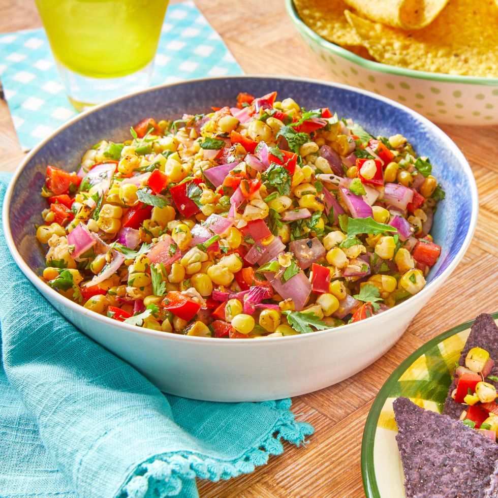

How to make Corn Salsa

Prep Time: 15 mins
Cook Time: 3 mins
Total Time: 20 mins
Servings: 6-8
Ingredients
- 4 ears of corn
- 1 small red onion
- 2 tbsp. olive oil
- 1 red bell pepper, diced
- 1 jalapeño pepper, finely chopped
- 3 tbsp. fresh lime juice
- 1 tbsp. red wine vinegar
- 1 tsp. salt
- ½ tsp. ground cumin
- ½ tsp. ground black pepper
- ½ tsp. chili powder
- ½ c. chopped fresh cilantro, plus more for garnish
- Tortilla chips, for serving
Directions
-
Preheat the grill to medium-high heat (400° to 450°).
-
Shuck the corn and remove the silks. Peel the onion and cut it into quarters. Brush the corn and onion all over with olive oil.
-
Grill the corn and onion, covered, until grill marks form, about 3 minutes per side. Remove from the grill and let them cool slightly.
-
Cut the kernels off the cobs and dice the onion. Combine in a medium bowl with the red bell pepper, jalapeño, lime juice, vinegar, salt, cumin, pepper, and chili powder. Stir to combine.
-
Just before serving, stir in the cilantro. Serve alongside tortilla chips.